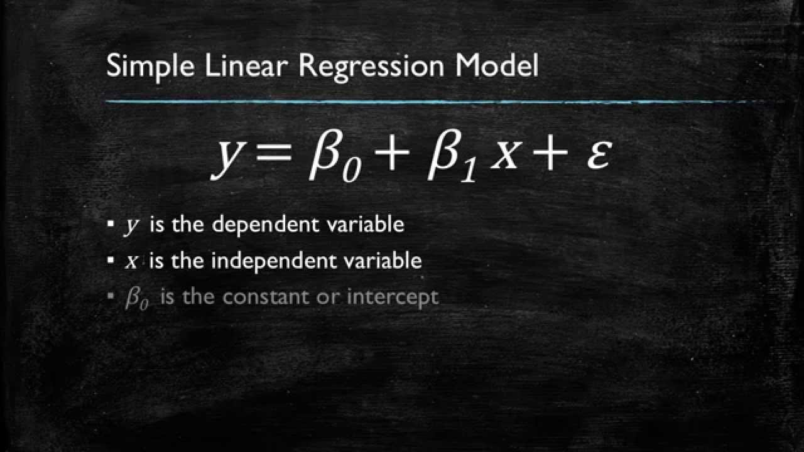
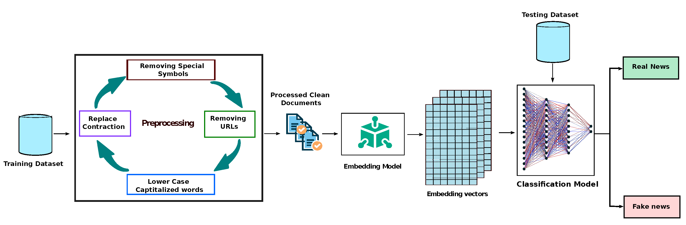

Proactive, highly motivated individual possessing a strong understanding of data analysis, statistics, and machine learning model deployment. Proficient in Python, Git, SQL, and visualization tools like Power BI, effectively solving business challenges.


This is a simple text-based game in which the player needs to travel
from London to Edinburg and has three options for travel modes:
Train, Bus, or Car Hire. Based on the player's choice, the game will
prompt different events and costs.

The objective of this project is to create visualizations of a earthquake dataset using Python libraries such as Matplotlib, Seaborn, and Pandas. The visualizations will help in identifying patterns, trends, and relationships between earthquake magnitudes, locations, and other related factors.

In this project, I built a linear regression model to predict flight arrival delays based on several variables using the sci-kit-learn library. The data was pre-processed, split into training and testing sets then standardized using Standard Scaler. The model was trained and evaluated using metrics such as MAE, MSE, RMSE, and R2 which calculate accuracy and variance.

I implemented a deep learning neural network model using Keras and
TensorFlow on the given dataset, by processing the input data of
size (input_shape) through hidden layers with a total of M trainable
parameters, using Adam optimizer with learning rate of Y and
categorical cross- entropy loss function. I also used a number of
other machine learning algorithms so I can see how accurate they are
when compared to each other.

This code is for a model that can identify whether a news article is
real or fake. It uses a dataset containing news articles, their
authors, titles, and text. The model first processes the information
by combining the author, title, and text, and then simplifying the
text by removing unnecessary words and characters. It then splits
the data into training and testing sets. The model then uses
different machine learning models, such as logistic regression,
decision tree classifier, and passive aggressive classifier, to
learn from the training data and predict whether a news article is
real or fake. It evaluates the performance of each model by
comparing their accuracy on both the training and testing data.